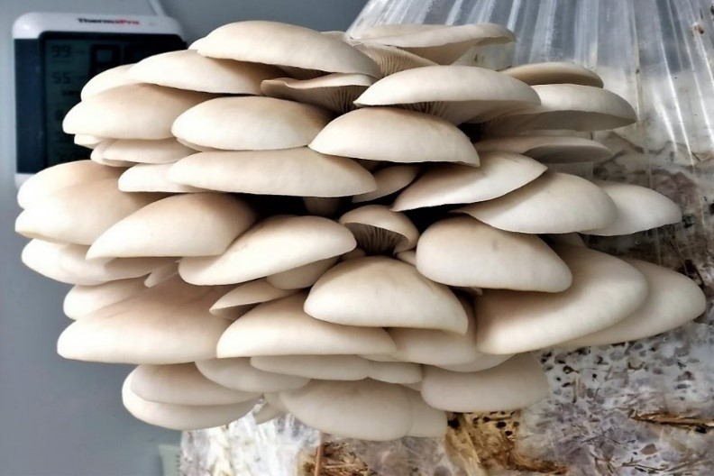
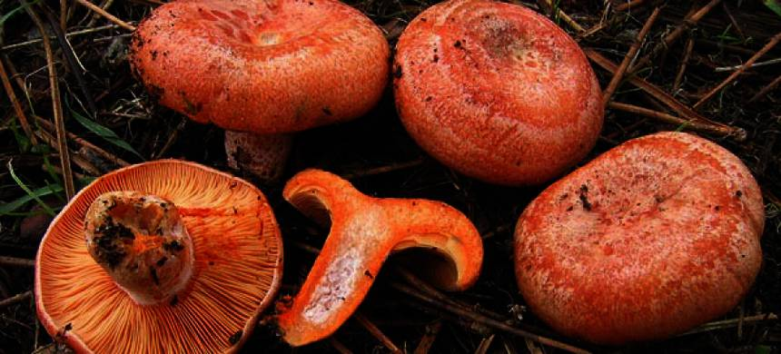
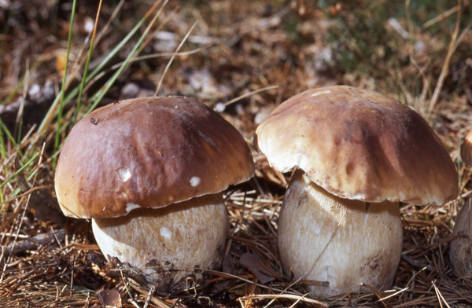
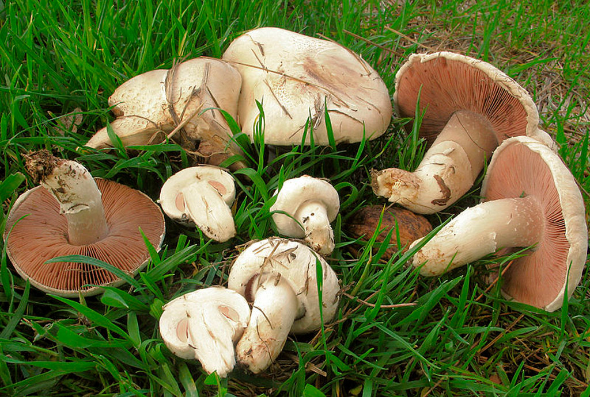
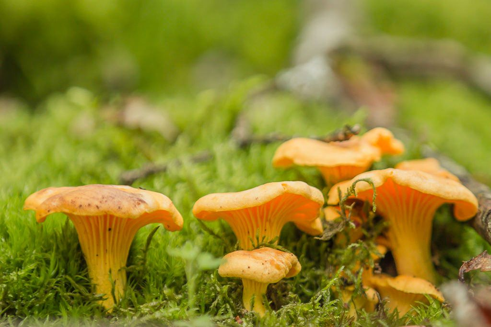

Top 5 Hongos Comestibles:
-
Pleurotus ostreatus (Seta de Ostra)
Es uno de los hongos comestibles más conocidos y recolectados. Crece en troncos de árboles muertos o moribundos y es fácil de reconocer por su forma similar a una ostra.
 -
Lactarius deliciosus (Níscalo o Rovellón)
Este hongo es muy apreciado por su sabor y textura. Se encuentra en bosques de pinos y se caracteriza por su color naranja y su capacidad para segregar un látex de color zanahoria cuando se corta.
 -
Boletus edulis (Hongo Porcini o Boleto)
Conocido por su carne blanca y sabor delicado, este hongo es popular en la cocina gourmet. Crece en bosques de pinos y robles.
 -
Agaricus campestris (Champiñón Silvestre)
Este hongo crece en praderas y campos abiertos. Es similar al champiñón cultivado, pero tiene un sabor más intenso.
 -
Cantharellus cibarius (Rebozuelo)
Con su color amarillo dorado y su forma característica, este hongo es muy buscado por su sabor afrutado y su aroma a albaricoque.
